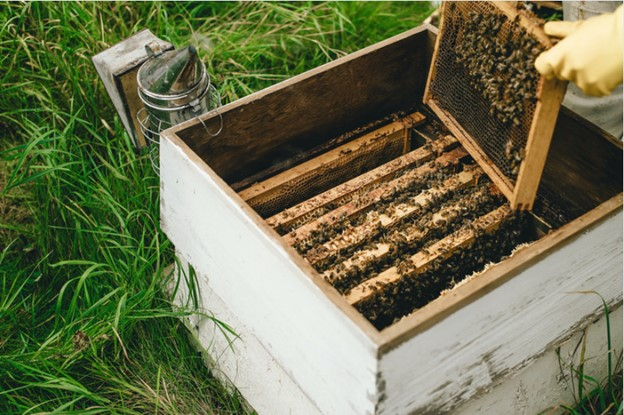
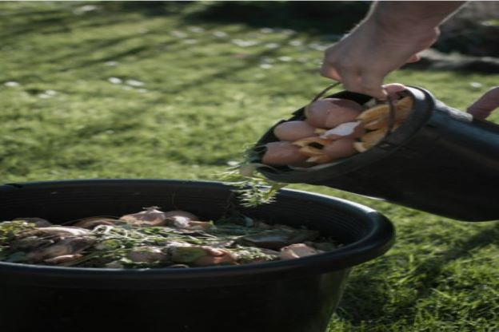

Joe first learned about hydroponics on a trip to Disney World where he got to see
their hydroponic greenhouse. He was amazed at how food was grown without the use
of soil. Starting hydroponics is pretty simple and only requires a few materials and
some basic testing. You can check out a site for beginners provided by Square Mile Farms at
How to build your own hyrdoponic system: a beginner's guide.
He also learned about aquaponics which is another technique he looks forward
to testing out at the homestead.

Beekeeping
Knowing the benefits that honey can provide, he decided to pursue beekeeping and has been
acquiring supplies and knowledge in preparation of the coming Spring to get his colonies started.
He talks to a lot of locals to get knowledge from them about setting up his beehive boxes and has
started researching sites to find out as much as he can. He recently learned that beehive boxes should
be painted specific colors so you don't upset the bees. He has much to learn! If you would like to
learn more you can check out
Beekeeping for Beginners.

Composting
Part of homesteading includes growing your own food to be as self-sustainable as possible.
Having well-balanced soil is important to ensure your garden has the nutrients it needs
to produce healthy plants. One of the easiest ways to do this is to compost. This process
occurs in nature as dead trees and leaves break down and turn into a rich soil over a long
time. We can do the same thing by turning our leaves, grass clippings, kitchen scraps, and
other organic material into compost, but in smaller quantities, which takes less time. The
site, Ultimate Guide To Composting For Beginners, provided by Nikki Tilley provides several
links to help not only beginners
but those who are more experienced looking for different techniques.